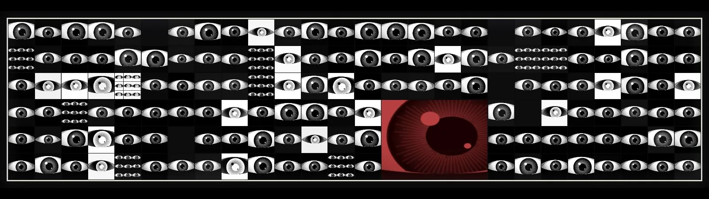
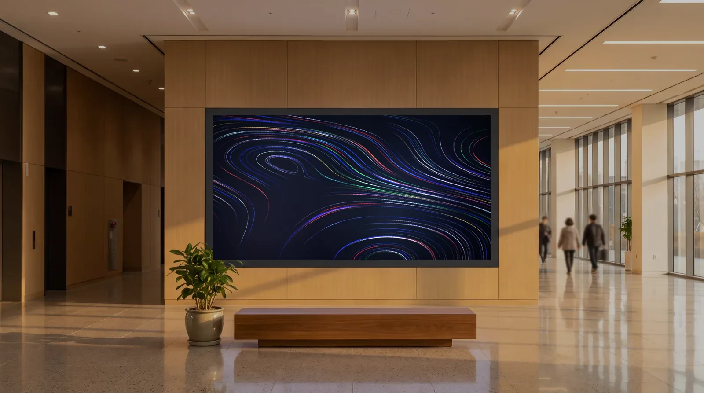
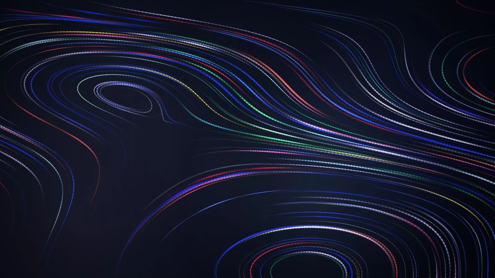
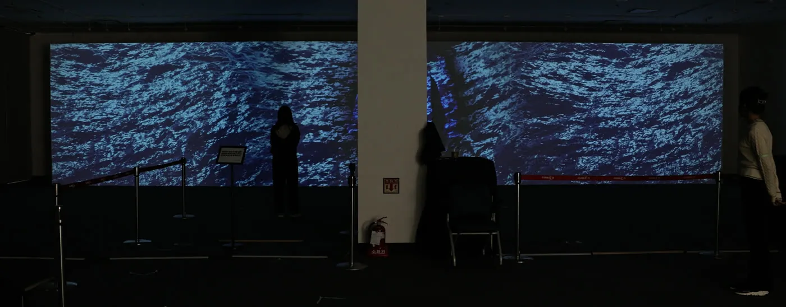
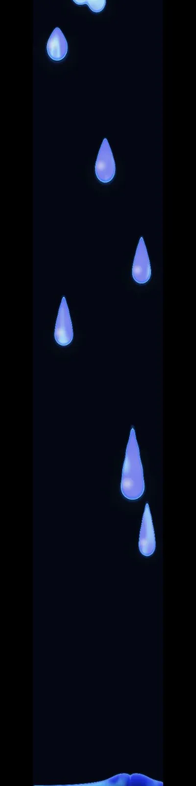
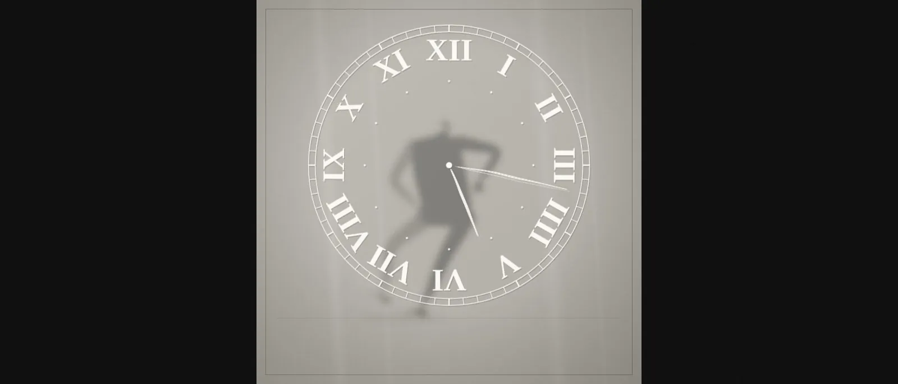

건물 외벽 대형 LED 전광판
가로로 긴 띠형 화면 (예: 32:9)
멀리서 스쳐 보는 화면. 글자보다 색과 움직임으로 읽히는 추상 영상이 맞습니다.
- 화면 예시
- EYEWALL · 눈의 벽
- 제작 방식
- 코드로 실시간 구동 · 4K 영상으로도 출력
- 관련 시공
- LED 전광판 설치 보기
Showcase · 어떤 화면에 무엇이 나오는가
사이니지는 종류마다 화면 비율과 보는 거리가 다릅니다. 어떤 화면에 어떤 영상이 어울리는지 실제로 돌아가는 화면으로 보여드립니다.
사이니지 콘텐츠는 화면 종류에 따라 다르게 만들어야 합니다. 건물 외벽 전광판은 32:9처럼 가로로 긴 띠형이고 로비 미디어월은 16:9, 안내용 사이니지는 9:16 세로, 기둥에 붙는 화면은 1:6까지 갑니다. 16:9로 만든 영상을 32:9 화면에 올리면 좌우가 비거나 위아래가 잘립니다.
보는 거리도 다릅니다. 스쳐 지나가는 외벽 화면은 글자보다 색과 움직임으로 읽혀야 하고, 사람이 머무는 로비 화면은 천천히 봐도 지겹지 않아야 합니다. 아래가 현장에서 가장 많이 쓰이는 화면 종류와 거기에 맞는 영상입니다.

Signage Types
‘실시간 구동’ 표시가 붙은 화면은 녹화 영상이 아니라 지금 코드가 직접 그리고 있는 화면입니다.

가로로 긴 띠형 화면 (예: 32:9)
멀리서 스쳐 보는 화면. 글자보다 색과 움직임으로 읽히는 추상 영상이 맞습니다.

16:9 대형 화면 상시 재생
머무는 사람이 보는 화면. 천천히 흐르는 컬러 무빙과 기관 데이터 시각화가 맞습니다.

9:16 세로 화면 · 안내 사이니지 겸용
안내 화면과 번갈아 트는 짧은 작품. 세로 구도로 다시 출력합니다.

벽면 형태에 맞춘 프로젝션 매핑
야간 상영. 건물 창·기둥 위치를 피해 매핑한 대형 영상.

1:4 ~ 1:6 세로 비율
엘리베이터 홀이나 기둥에 붙는 좁고 긴 화면. 위아래로 흐르는 구성이 맞습니다.
Custom Work
아래 시계는 유리벽 뒤의 사람이 바늘을 지우고 다시 긋는 작품입니다. 흐르는 색면, 물리로 계산한 물, 다국어 타이포처럼 형식은 소재에 따라 달라집니다.

가변 (띠형·정사각 모두 대응)
유리벽 뒤의 사람이 시곗바늘을 지우고 다시 긋는 시계. 실제 시각을 따라가며, 저장된 영상이 아니라 코드가 지금 그리고 있는 화면이다.
기관이 원하는 이미지나 참고 예시가 있으면 그것을 재료로 여러 방식으로 뽑아냅니다. 같은 소재를 흐름·입자·타이포·물리 등 다른 방법으로 풀어 시안으로 보여드리고, 고르신 방향으로 완성합니다. 처음부터 무엇을 만들지 정해두지 않으셔도 됩니다.
화면만 있고 무엇으로 틀지 정해지지 않은 현장이 많습니다. 콘텐츠를 안정적으로 상시 재생할 재생 PC를 현장 화면 규격에 맞춰 세팅해 전달합니다. 담당자가 별도로 장비를 알아보실 필요가 없습니다.
기존 사이니지 재생 프로그램은 공공 API를 직접 받아 화면에 반영하지 못합니다. 정해진 영상 파일을 순서대로 트는 구조이기 때문입니다. 오늘은 봄날은 자체 개발한 방식으로 공공 API를 실시간으로 읽어 화면에 반영하며, 대형 사이니지에서도 같은 방식이 돌아갑니다. 날씨·대기질·기관 데이터가 바뀌면 화면이 따라 바뀝니다.
실시간 연동이 필요 없고 화면만 예쁘게 틀고 싶은 경우에는, 설치된 패널 크기에 맞춰 저희가 렌더링해 영상 파일로 전달드립니다. 기존 재생 장비에 그대로 올리시면 됩니다.
FAQ
화면 예시를 보신 담당자분들이 가장 많이 물어보시는 내용입니다.
다르게 만들어야 합니다. 화면 비율이 다르기 때문입니다. 건물 외벽 전광판은 32:9처럼 가로로 긴 띠형이고, 로비 미디어월은 16:9, 안내용 사이니지는 9:16 세로, 기둥에 붙는 화면은 1:6까지 갑니다. 16:9로 만든 영상을 32:9 화면에 올리면 좌우가 비거나 위아래가 잘립니다. 보는 거리도 다릅니다. 스쳐 지나가는 외벽 화면은 색과 움직임으로 읽혀야 하고, 사람이 머무는 로비 화면은 천천히 봐도 지겹지 않아야 합니다.
이 페이지에서 ‘실시간 구동’ 표시가 붙은 화면은 지금 이 순간 브라우저에서 코드가 직접 그리고 있는 화면입니다. 미리 녹화한 영상이 아닙니다. 오늘은 봄날은 미디어아트를 코드로 만들기 때문에 같은 작품을 현장 화면 비율과 해상도에 맞춰 다시 출력할 수 있습니다.
가능합니다. 원하시는 이미지나 참고 예시를 주시면 그것을 재료로 여러 방식으로 뽑아냅니다. 같은 소재를 흐름·입자·타이포·물리 시뮬레이션 등 다른 방법으로 풀어 시안으로 보여드리고, 고르신 방향으로 완성합니다. 무엇을 만들지 처음부터 정해두지 않으셔도 됩니다. 시안 3종은 요청 후 1주일 이내에 나옵니다.
가능합니다. 기존 사이니지 재생 프로그램은 정해진 영상 파일을 순서대로 트는 구조라 공공 API를 직접 받아 화면에 반영하지 못합니다. 오늘은 봄날은 자체 개발한 방식으로 공공 API를 실시간으로 읽어 화면에 반영하며, 대형 사이니지에서도 같은 방식이 돌아갑니다. 날씨·대기질·기관 보유 데이터가 바뀌면 화면이 따라 바뀝니다.
그렇게도 드립니다. 설치된 패널 크기에 맞춰 저희가 렌더링해 영상 파일로 전달하므로, 기존 재생 장비에 그대로 올리시면 됩니다. 재생할 장비가 아직 없는 현장은 사이니지 재생 PC 세팅까지 해서 전달드립니다.
여기에 없는 내용은 010-4292-1999 또는 studio@publicbloom.art으로 문의해주세요. 접수 후 24시간 이내에 연락드립니다.
설치 장소와 벽면 · 화면 크기, 일정만 알려주시면 실측 후 회계연도 기준 견적서를 보내드립니다. 여성기업 확인서와 직접생산확인증명서를 함께 발행합니다.